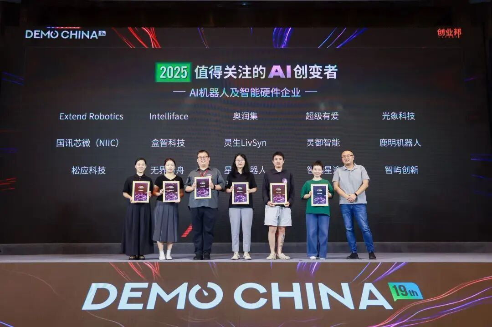

9⽉24⽇下午，创始⼈元晓帅博⼠代表超级有爱智能科技“超级球球”团队，⾯向现场的投资机构和⼈⼯智能-机器⼈智能硬件企业，展⽰了AI情绪陪伴机器⼈“超级球球”的创新功能与商业规划，引起多家投资机构的浓厚兴趣。
超级有爱智能科技创始⼈元晓帅博⼠展⽰AI情绪陪伴机器⼈“超级球球”根据创业邦官⽅介绍，DEMO CHINA是中国历史最久，规模最⼤的早期科技企业展⽰及链接平台，是国内创投领域的标志性活动。本届⼤会由创业邦主办，杭州市拱墅区⼈⺠政府指导，拱墅区委⼈才办、杭州⼤运河数智未来城管委会联合主办，汇聚了126家早期科技企业、213家投资机构。